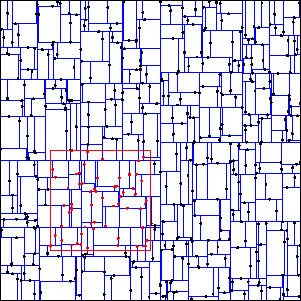
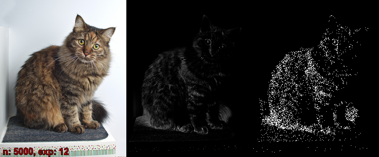
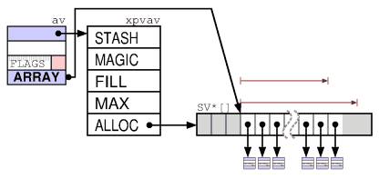
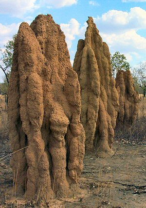

Perl, vectores, geometría, problemas, algoritmos y arte y todo lo demás
Salvador Fandiño (sfandino@yahoo.com)
Granada Perl Workshop - Junio 2014
Vector
An Euclidean vector is a geometric quantity having magnitude and direction expressed numerically as tuples [x0, x1, x2, ...].
... en geometría
Un punto en el espacio
Una dirección
La separación entre dos puntos
Un eje de giro
Una rotación
...
... en matemáticas
(espacio vectorial)
Suma y resta, vector nulo (
[0, 0, 0, ...])Multiplicación por un escalar
Producto escalar
En 3 dimensiones, producto vectorial
Equivalencia con matrices 1xN (v. col.) o Nx1 (v. fila)
... en Perl
- Vector::Object3D (3D)
- Math::VectorReal (3D)
- Math::Vec (3D)
- Math::GSL::Vector
- y ...
... Los buenos!
- PDL
- Math::Vector::Real
PDL
"Perl Data Language"
Procesado de datos multidimensionales
Muy eficiente (CPU y memoria)
Inspirado en APL
APL
"A Programming Language"
196x
datos multidimensionales
estructuras de control implicitas

APL, ejemplos
Números primos entre 1 y R:
(~R∊R∘.×R)/R←1↓ιRConway's Game of Life
life←{↑1 ⍵∨.∧3 4=+/,¯1 0 1∘.⊖¯1 0 1∘.⌽⊂⍵}
J
Variante moderna de APL
Open Source
ASCII
Inspiración de los adverbios de Perl 6
PDL, inconvenientes
Curva de aprendizaje
Soporta matrices, no vectores
No intuitivo
Es XS
Math::Vector::Real
Aritmética con vectores n-dimensionales en el dominio de los números reales
Fácil de usar e intuitivo
Escrito en Perl puro
Velocidad, objetivo secundario...
Math::Vector::Real::XS
M::V::R reimplementado en XS
Más rápido x5 ~ x10
-
Se carga automáticamente si esta instalado
use Math::Vector::Real; C API...
C API
Problema: Tengo un módulo en XS (
M::S) y quiero que otro módulo (M::C) tambien escrito en XS pueda utilizarlo
C API
¿Donde esta el problema?
M::Cpuede usareval_pv.Guardo en un hash (
%M::S::c_api), punteros a las funciones C que quiero exportar. DesdeM::C, recupero los punteros y los uso.Ejemplo: Time::HiRes.
o...
Module::CAPIMaker
A partir de la declaración de las funciones que queremos exportar:
int foo(double) char *bar(void)Genera todo lo necesario para que las mismas se puedan utilizar transparentemente desde código XS en otros módulos.
Module::CAPIMaker
Lo usa
Math::Int64
Math::Int128
No lo usa
- Math::Vector::Real::XS
Math::Vector::Real
$u = V(1.7, 2.0); $v = V(-1, 3.2)
$w = 7 * $u - $v + [0, 0.1];
$s = $u * $w; # producto scalar
$z = $u x $w; # producto vectorial
$n = abs($u); # norma
$v1 = $v->versor;
El operador "x"
Bug #121827 for perl5: overloading 'x' is broken
scalar((...) x $a)
La familia Math::Vector::Real
- Math::Vector::Real
- Math::Vector::Real::XS
- Math::Vector::Real::Random
- Math::Vector::Real::kdTree
- Math::Vector::Real::Farthest
- Math::Vector::Real::MultiNormalMixture
- ... y los ilegitimos!
Math::Vector::Real::Random
-
Generación de vectores aleatorios
versores
caja
hiperesfera
paralelotopo
normal multivariante
Basado en Math::Random
Math::Vector::Real::kdTree
-
k-d tree

estructura simple y muy versatil
-
busquedas n-dimensionales eficientes
find_in_ballfind_in_boxnearest_vectorfarthest_vector
-
otros algoritmos
- k-means
módulo "cerrado"
Math::Vector::Real
Metodología de desarrollo: PDD
PDD
Pique
Driven
Development
PDD
Alguien me pregunta por correo o en un foro como hacer algo y...
a mi se me ocurre un metodo pero tengo que probarlo
o se como hacerlo, lo explico, nadie lo entiende
o con uno de mis módulos casi se puede resolver
Entonces, ¡me pico y lo hago!
PDD, ejemplo:
17 abril, Mr D.R.
Is there any chance you have a method to calculate the largest distance between two vectors in a set?
25 abril:
Math::Vector::Real::Farthesten CPAN20 mayo, Mr D.R. otra vez:
I hate to request [...] but I found an article describing an implementation of k-Means [...]
1 junio: nueva version de
Math::Vector::Real::kdTreecon soporte para k-means clustering.
Problemas
Generación de clusters
Problema: Para validar un algoritmo, necesito generar un conjunto de puntos n-dimensionales que formen clusters "naturales".
Solución 1: Metodo constructivista
De manera ingeniosa me invento una función parametrizable (u objeto) que sea capaz de generar "clusters".
Combino varios de estos clusters mediante una parametrización aleatoria.
Ejemplo:
my @sphere = map {
my $center = Math::Vector::Real->random_in_box(3, 1.0);
my $radius = rand(0.5);
Sphere->new($center, $radius)
} 1..$M;
my @v = map { $sphere[rand($M)]->random_point } 1..$size;
Solución 1: Método constructivista
Limitaciones:
Los datos generados siguen un patrón
Los clusters generados no cumplen la condición de "naturales"

Solución 2: Metodo probabilístico:
Elijo una función de densidad de probabilidad n-dimensional
f($v)Utilizo esa función para generar puntos aleatorios
Ejemplo (Rejection sampling):
while (@p < $size) {
my $v = Math::Vector::Real->random_in_box($dim, 1);
if (rand($max_f) < f($v)) {
push @p, $v;
}
}
Solución 2: Método probabilístico
Limitaciones:
La probabilidad de descarte puede ser muy alta (*)
No deja de ser una variante del metodo constructivista
Solución 3: Método "inspirado"
Creo una funcion de densidad de probabilidad a partir de otros datos de origen externo
Utilizo esa función para generar puntos aleatorios
Solución 3: Método "inspirado"
Ejemplo:
- Busco una imagen en Google
- La utilizo para generar una función de distribución bidimensional
- Genero puntos según esa distribución

tie my(@acu), 'Tie::Array::Packed::DoubleNative';
for my $j (0..$height-1) {
for my $i (0..$width-1) {
my @c = $img->GetPixel(x => $i, y => $j);
my $c = ($c[2]*$c[2]+$c[1]*$c[1]+$c[0]*$c[0]) ** $exp;
push @acu, $acu[-1] + $c;
}
}
my $top = $acu[-1];
my $ref = tied(@acu);
for my $r (random_uniform($n, 0, $top)) {
my $ix = $ref->bsearch_le($r);
my $j = int($ix / $width);
my $i = $ix - $j * $width;
$out->SetPixel(x => $i, y => $j, color => [1, 1, 1]);
}
Solución 3: Método "inspirado"
Limitaciones:
- Dificultad de obtener datos externos
- Calidad de los datos externos
- Escala mal (dimensión, resolución)
Tie::Array::Packed
Arrays densos en Perl
Reduce el consumo de memoria un orden de magnitud
Implementado en XS (pero la interfaz
tiees lenta)Algunos métodos interesantes (ordenación, busqueda binaria, etc.)
 Vs

Generación de clusters
¿Más?

Solución 4: Método emergente
Pasar horas y horas creando una arquitectura de agentes cuyo comportamiento emergente genere clusters
AI::Termites
mplayer 'mf://images/termites/*.png' -mf fps=10 -fs
Solución 4: Método emergente
Limitaciones
Lento
Podría haber un patrón oculto
Generación de clusters
PDD:

Recubrimiento
Problema: dado un conjunto de puntos N-dimensionales A y un
parametro radio $r, encontrar un subconjunto mínimo del mismo R
tal que para cualquier punto de A exista un punto en R a una
distancia menor que $r.
Solución 1: Fuerza bruta
Garantiza solución globalmente óptima
Complejidad exponencial (probablemente NP-hard)
En la práctica no es viable
Solución 2: Método del máximo gradiente
Repetidamente elegimos el punto cuya bola cubra más elementos:
use Sort::Key::Top qw(ikeytail);
my @R;
while (@A) {
my $best = ikeytail { count_in_ball($_, $r, \@A) } @A;
push @R, $best;
@A = grep { $best->dist($_) > $r } @A;
}
Solución 2: Método del máximo gradiente
Simple y rápido
La solución suele ser buena, aunque no siempre
Sort::Key::Top
Selecciona el top-X de una lista
@a = keytop { key($_) } $X => @data; # @a = (sort { key($a) cmp key($b) } @data)[0..$X-1]XS, muy rápido
Multiples variantes (¡demasiadas!)
Solución 3: Algoritmo genético
Seleccionamos un conjunto de soluciones diversas y no optimas
Las cruzamos y mutamos
Jugamos a la ruleta (cargada) con ellas
Repetimos
Algorithm::GAUL
-
wrapper GAUL: The Genetic Algorithm Utility Library
- C
- rapida
- flexible
- parallela (hilos, MPI, ...)
- abandonada (2009)
en progreso... por siempre
my $gaul = Algorithm::GAUL->new(len_chromo => scalar(@p),
population_size => $pop_size,
select_two => 'random',
select_one => 'aggresive',
mutation_ratio => 0.20,
seed => \&seed,
evaluate => \&weight,
adapt => \&repair,
stop => \&stop,
mutate => \&mutate,
elitism => 'parents_survive',
scheme => 'lamarck_children',
crossover => \&crossover);
while (...) {
$gaul->evolution(1);
my $s = $gaul->entity_by_rank(0)->[0];
...
}
sub crossover {
# say "crossing...";
my $s = \$_[3][0];
my $d = \$_[4][0];
my $p = $_[1][0];
my $m = $_[2][0];
my $z = $b0 + $db->random_in_box;
my $d2 = rand($diam);
$d2 *= $d2;
for my $ix (0..$#p) {
if ($z->dist2($p[$ix]) < $d2) {
vec($$s, $ix, 1) = vec($p, $ix, 1);
vec($$d, $ix, 1) = vec($m, $ix, 1);
}
else {
vec($$s, $ix, 1) = vec($m, $ix, 1);
vec($$d, $ix, 1) = vec($p, $ix, 1);
}
}
}
sub repair {
# say "repairing chromosomes";
for my $s (@{$_[1]}) {
my $m = $missing;
my $ix = -1;
while (defined($ix = bu_first($s, $ix + 1))) {
vec($m, $_, 1) = 0 for @{$cover[$ix]};
}
$ix = -1;
while (defined($ix = bu_first($m, $ix + 1))) {
my $r = $cover[$ix][rand scalar @{$cover[$ix]}];
vec($s, $r, 1) = 1;
vec($m, $_, 1) = 0 for @{$cover[$r]};
}
}
}
mplayer 'mf://images/cover/*.png' -mf fps=10 -fs
Solución 3: Algoritmo genético
-
Dificil saber que esta pasando
visualización
ajuste del algoritmo
Dificil mutar y cruzar conservando calidad de la solución
Bit::Util
Funciones para manipular un vector de bits
busqueda (
bu_first,bu_last)conteo (
bu_count)en progreso (2012)
XS
pero código C sin optimizar

Cubrimiento aleatorio del plano
Ploblema: A partir de una figura geometrica básica (triangulo, cuadrado, circulo, etc.), llenar el plano posicionando la misma de manera repetida y aleatoria.

Cubrimiento aleatorio del plano
-
Subproblemas
¿Como buscar un agujero sin llenar?
¿Que cabe en el agujero?
Math::Geometry::RandomPlaneFiller
Usa una estructura de k-d tree para particionar el plano (2D)
-
Para buscar agujeros
Cada region tiene una probabilidad asignada proporcional al área aun libre
Cuando se añade una figura nueva se reajustan las probabilidades
-
Para medir agujeros (rater)
- Enumera las figuras existentes ordenadas en base a una metrica parametrizable
-
- Solo implementado el soporte para circulos
mplayer 'mf://images/random-plane-filler/*.png' -mf fps=10 -fs